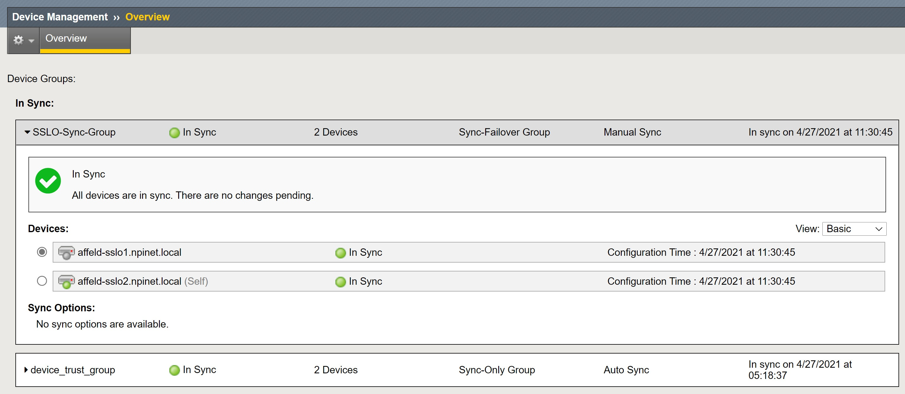
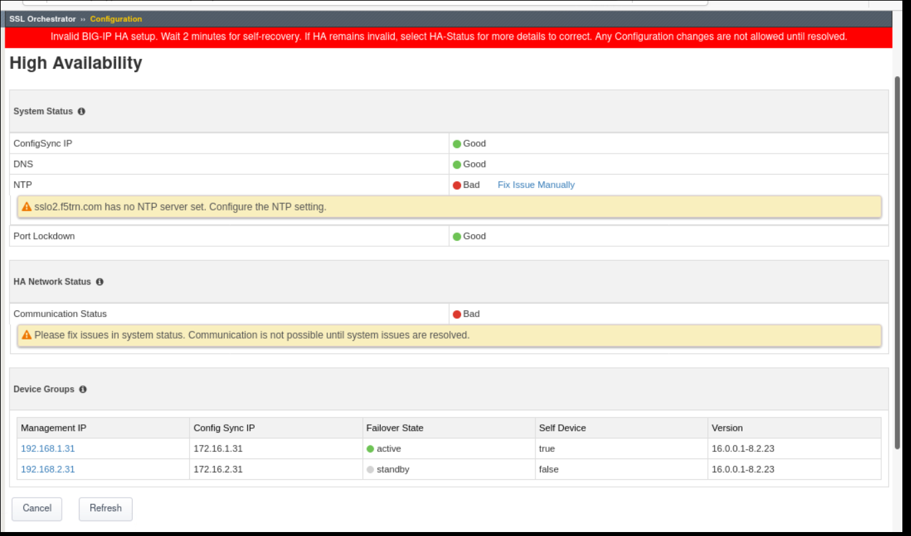
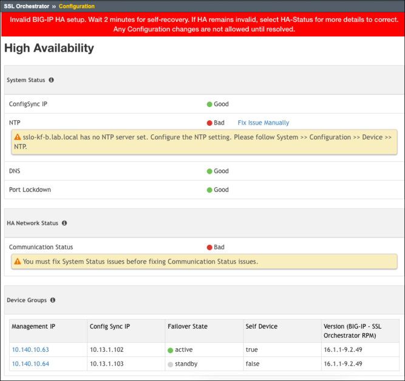

High Availability (HA)
This section discusses troubleshooting HA related errors that prevent normal usage of the SSLO GUI.
SSLO tracks the state of the active and standby BIG-IP devices when configuration updates are being made and periodically using the Reconciliaton Worker. The HA verification and auto-remediation features have improved as SSLO has matured.
SSLO 7.5+ includes HA validation functions
SSLO 8.2+ includes an HA status dashboard
About SSLO HA
SSLO can operate in a stand-alone or HA mode. HA relies upon BIG-IP MCP synchronization to ensure failover and configuration consistency. Prior to version 9.0 the GOSSIP protocol was used to synchronize the REST block configuration in real-time, but latterly an MCP iFile is instead synchronized via standard BIG-IP CMI and has become the configuration source of truth.
SSLO carefully tracks the state of both remote and local BIG-IP units both during configuration updates, and continuiously. The HA verification and auto-remediation features have improved as SSLO has matured.
SSLO 7.5+ include HA validation functions
SSLO 8.2+ include an HA status dashboard
SSLO 9.x and later automatically switch into HA mode or non-HA mode depending on iAppLX’s view of MCP. Earlier versions cannot switch automatically and must be re-installed after adding or removing HA.
Troubleshooting
SSLO requires a
Working sync-failover device group. Hence it is necessary to validate the MCP HA setup.
Working iAppLX trust configuration with correct certificates, IDs and members. Hence it is also necessary to validate the REST HA setup.
Validate MCP HA
The BIG-IP configuration must show a nominal status of In-Sync or Changes Pending.
If the HA status is Disconnected, use the following instructions to repair the CMI synchronization:
K13946: Troubleshooting ConfigSync and device service clustering issues
Validate REST HA
Validate the MCP configuration on each device, followed by the HA (GOSSIP) synchronized REST objects. In most cases the SSLOFIX tool can automatically repair and rebuild the iAppLX HA relationship. This tool is included with BIG-IP versions released after April 2022. Alternatively, it can be provided by F5 Tech Support.
SSLOFIX Instructions
Bear in mind that
Prior to SSLO version 9.0, reverting SSLO to a stand-alone topology involved deleting everything and start again.
To fix SSLO HA topology(s) that remain stubbornly in an Error state, it is necessary to either delete the topology itself from the iApp LX menu, or use SSLO’s Delete All (trashcan button) function to remove all SSLO configuration and associated MCP objects.
Build pre-requisites
Since SSLO on a HA cluster can easily be misconfigured, it is important to check whether all the following build pre-requisites have been satisifed.
All SSLO devices must be deployed on the same type of hardware (if hardware based) and must be running the same version of TMOS
Until recently (when GOSSIP was the main workhorse) it was not necessary to upload and install the iApp template onto more than one device because the SSLO .rpm file (f5-iappslx-ssl-orchestrator) would be automatically replicated (via REST framework) across HA peers. But with the removal of GOSSIP replication, the user must now manually install the latest SSLO .rpm file (upon install/upgrade) onto each BIG-IP just like one would do for a BIG-IP .iso or Engineering Hot Fix.
Similar SSLO licenses must be applied to all devices
The Port Lockdown setting should be set to either “Allow All” or “Allow Default”
All devices must be correctly setup for Device Service Clustering. Previously the HA cluster had to be setup for MANUAL with INCREMENTAL SYNC but with the introduction of File synchronization, auto sync mode is also now supported.
The HA cluster must be setup in an Active/Passive configuration (Active/Active is not supported)
The HA cluster must be in Sync (check in Device Management – Overview)
SSLO configuration updates should always be made to the Active unit before they are pushed to the Standby.
All the interfaces used by SSLO should serve the same purpose on each peer device. For example, If interface 1.1 is used to connect to the network that leads to your layer 3 inline device, that interface should be used on all devices.
None of the BIG-IP devices in the HA cluster should be originally copied or cloned. Do not use the same UCS file to build similar devices since duplicate UUID’s will stop them synchronizing.

The HA Diagnostic Dashboard
SSLO v7.5+, v8.2+, and 9.x+ provide a status dashboard for HA which includes tests and remediation guidance. A large red error message locks the configuration if the system fails any of SSLO’s various HA tests.
Errors are presented with a large red warning banner.

HA Dashboard Button
Reset Device Information
The running iAppLX system holds device related information about the system configuration. If the MCP HA configuration is cloned to another BIG-IP, this REST data may have to be reset
restcurl -X DELETE shared/resolver/device-groups/tm-shared-all-big-ips/devices restcurl -X POST -d '{}' tm/shared/bigip-failover-state
It may also be necessary (depending on version) to reset device trust
Alternatively, use the tool SSLOFIX to validate or reset Device Information.
Using the HA Diagnostic Dashboard
Click on the 3-blocks HA Dashboard button
to open the following troubleshooting screen

HA Dashboard in 8.4+ and 9.x
In the above screenshot, both Communication Status and NTP are reporting bad status.
The majority of control-plane issues administrators experience with SSLO can be attributed to REST and/or MCP inconsistencies between peer BIG-IP devices or locally.
To address this, a dashboard was added to SSLO in v8.0 which has been gradually improved in subsequent releases. This runs as a nodejs “HAVerificationHandler” javascript REST worker that runs inside restnoded.
It performs a number of checks (some listed below) and if any of them fails, the SSLO configuration is locked until the underlying problem is resolved.
Comparing the number of elements in Gossip devices vs HA devices
Comparing the names and addresses in Gossip devices vs HA devices
Comparing the versions of REST framework and SSLO iApp(SGC)
Ensuring that MCP sync-failover (not to be confused with the “Active” HA state) is active (turned on)
Ensuring the REST Storage version of the MCP HA configuration matches between HA peers
Ensuring that the management IP address is set for each device in the group
Ensuring that the configsync IP address is set for each device in the group
Ensuring that the configsync and management IP addresses are different
Ensuring that the self device is set in the device group
Ensuring that only one HA device is in an Active status
Ensuring that only one HA device is in a Standby status
Ensuring that the Port Lockdown settings are configured correctly. This was originally restricted to Allow All or Allow Default for MCP/GOSSIP but customers can now specify other custom lockdown settings when configuring SSLO. If Custom settings are specified, port 443 must be added to the allowed list of ports so that REST calls can still be made between the HA devices.
Ensuring that an NTP server is configured and available
Ensuring that a DNS server is configured and available
Comparing the version of SGC between devices
Checking that the MCP sync state is not set to “Changes Pending” or “Not all devices synced”